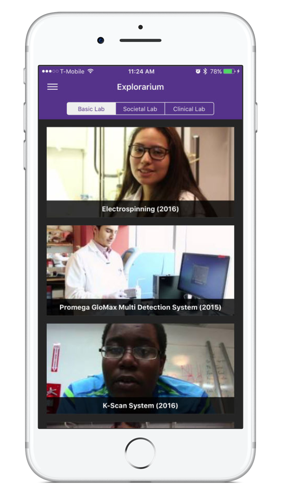

VCRC-Q
Virtual Clinical Research Center & Questionarium
The Virtual Clinical Research center and Questionarium is a simulation of an NIH-type Clinical Translational Science/Clinical Research Center (CTSA/CRC), where students/trainees can navigate through the explorarium, library, and current research spaces, and choose expert or student presentations on various topics and pursue research questions of interest.
- Current research - Infectious Diseases
- Student-Produced and professional videos about current topics in biomedical research, curiosity, and mentoring.
- Links to CTSAs
Get the vcrcq app free on the app store. And online at vcrcq.org